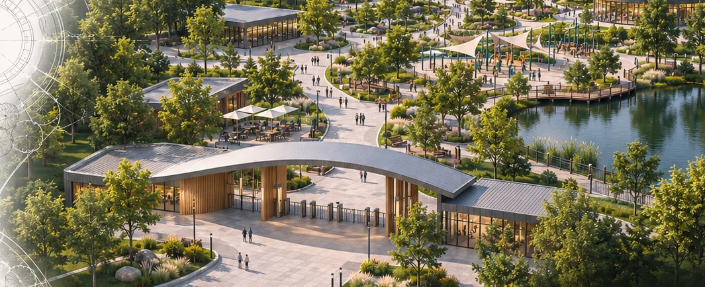
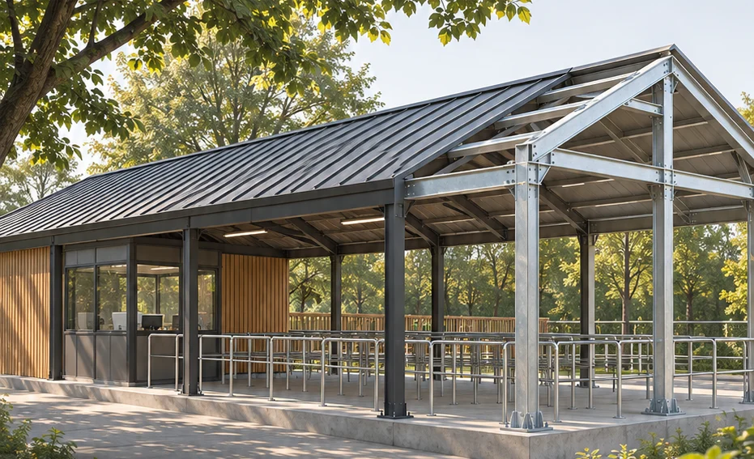
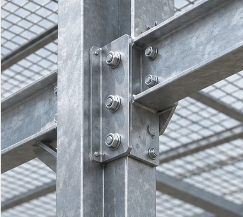
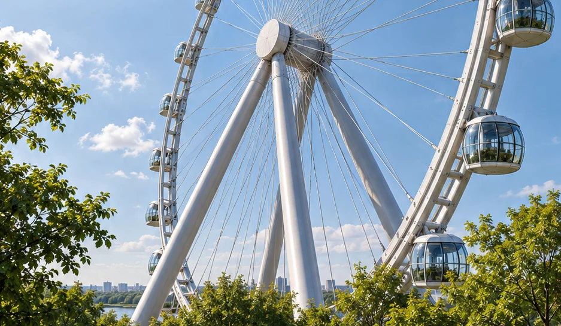
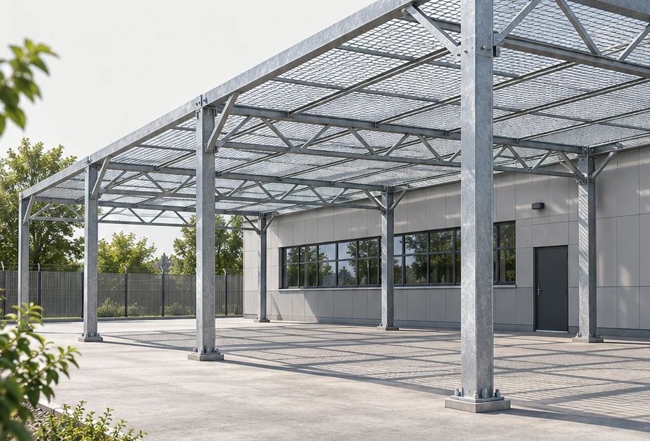
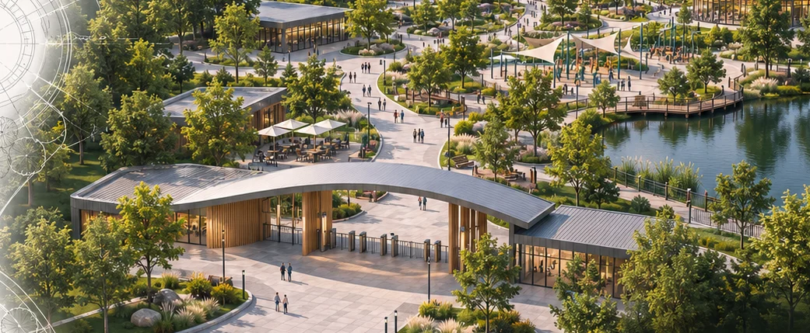
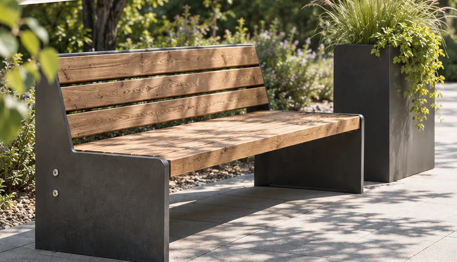
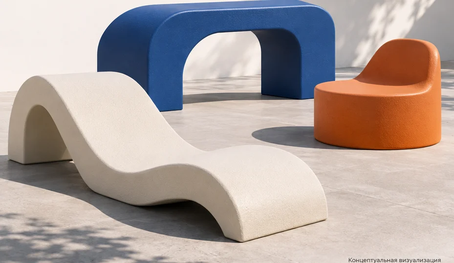

Архитектура
Концепция территории, планировка, архитектурный облик, тематизация, оформление и свет.
Архитектура · Инжиниринг · Визуализация
Парки, спортивные пространства, защитные конструкции и отдельные изделия.



01 / Направления
Выберите направление, чтобы посмотреть, что входит в работу и какие данные нужны для старта.

Архитектурная посадка колеса, станция и пространство вокруг.

Пассивные защитные конструкции для объектов и площадок.

Размещение кортов, ограждения, покрытия и освещение.

Игровые и спортивные зоны, вписанные в территорию.

Концепция парка, планировка и архитектурный облик.

Уличная мебель, навесы, навигация и элементы благоустройства.

Формованные детали, уличная мебель и элементы тематизации.
02 / Подход
В работу можно включить одну из задач или собрать их в единый проект.
Концепция территории, планировка, архитектурный облик, тематизация, оформление и свет.
Конструктивная схема, материалы, соединения и сопряжение с оборудованием и площадкой.
Модели и изображения для согласования: от общего вида территории до деталей объекта.
03 / Реализация
Реализацию обсуждаем отдельно. По согласованному проекту определяем, что предстоит изготовить, как подготовить площадку и в какой последовательности вести монтаж.
Перейти к брифу04 / Бриф
Выберите направление и опишите объект. Получится короткий бриф, который можно сохранить и передать команде проекта.